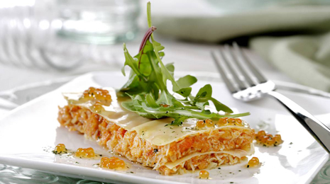

Lasaña de centollo
Asi lo cocinamos
Pon una cazuela con agua, la justa para cubrir el centollo. Añade un puñado de sal (la medida viene a ser un puñado por kg.). Introduce el centollo en la cazuela y deja cocer durante 10 minutos, empezando a contar desde que el agua rompa a hervir. Ve retirando la espuma que vaya apareciendo en la superficie. Una vez el centollo haya alcanzado esos 10 minutos de cocción, introdúcelo en un recipiente con abundante agua, hielo y sal. Cuando se haya enfriado, extrae toda la carne de las patas y la cabeza, cerciorándonos de que no queda ningún resto de cáscara o partes no comestibles. Ahora pocha la cebolla, bien picadita, en una cazuela baja con un poco de aceite. Cuando esté bien tierna, incorpora a la cazuela el puerro y la zanahoria, también picados. Rehoga el conjunto y agrega la salsa de tomate y el laurel. Cocina a fuego suave durante 5 minutos, vierte el brandy y flambea.
Con el fuego ya apagado, añade al sofrito la carne del centollo. Remueve bien, hasta conseguir una mezcla homogénea y consistente. Pon a cocer las placas de lasaña en una olla con abundante agua hirviendo y sal. Cuando la pasta esté al dente, escúrrela y pásala a un recipiente con agua y hielo. Una vez frías las placas, escúrrelas de nuevo y disponlas sobre un paño de cocina seco.
Monta la lasaña intercalando placas de pasta con capas del relleno elaborado, procurando que la primera y la última capa sea de pasta. Introduce la lasaña en el horno para calentarla y decora con unas hojas de rúcula y unas huevas de trucha.
Trucos y consejos
Para trabajar mejor el relleno, resérvalo en la nevera durante al menos 1 hora.
Informacion Nutricinal
El centollo es un marisco de la familia de los crustáceos. De su composición nutricional destaca el contenido en proteínas y minerales como yodo, sodio y potasio. En general, los mariscos están desaconsejados en caso de hiperuricemia o gota por su aporte de purinas.
El sofrito, elaborado con tomate y cebolla, enriquece el plato en sustancias vegetales muy beneficiosas para la salud. La cebolla es rica en compuestos sulfurados, responsables de su olor característico y que le confieren propiedades antioxidantes. Asimismo, el licopeno, un colorante natural presente en el tomate, ejerce esta misma función. La ingesta de estas sustancias se relaciona con una menor incidencia de enfermedades cardiovasculares y algunos tipos de cáncer.
El brandy aporta un aroma que combina muy bien con la carne del marisco, y al flamearse se elimina el alcohol, por lo que este plato puede tomarlo toda la familia.
Por su parte, la pasta va a enriquecer esta receta con hidratos de carbono, confiriéndole al plato su carácter energético.